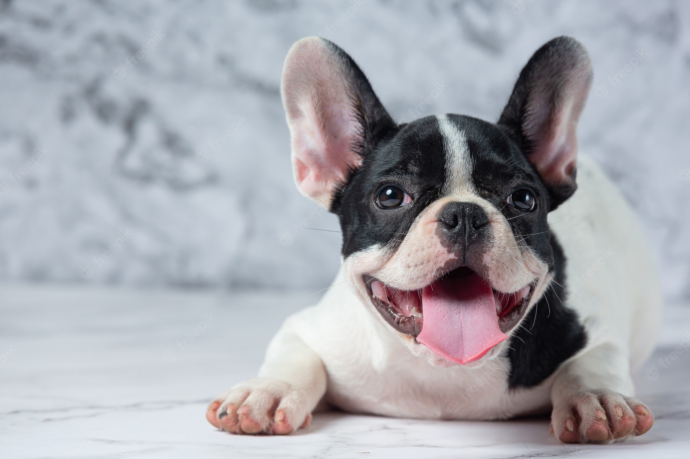

Adote um animalzinho!
Há 5 anos nossa ONG trabalha no resgate e nos cuidados de animais, para ajudá-los a encontrar um novo lar.
São bichinhos com muito carinho para dar e receber!
Faça parte da nova vida de um deles e Adote Aqui!